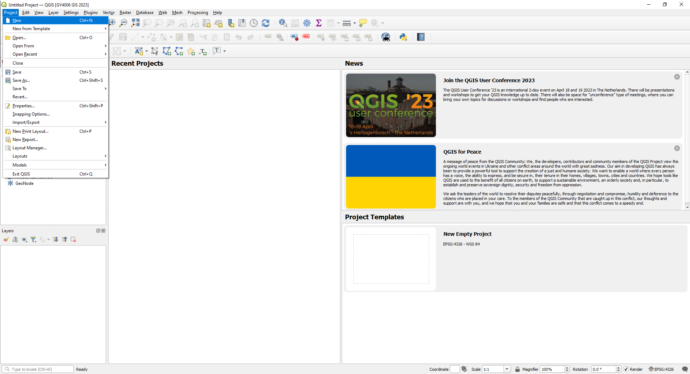
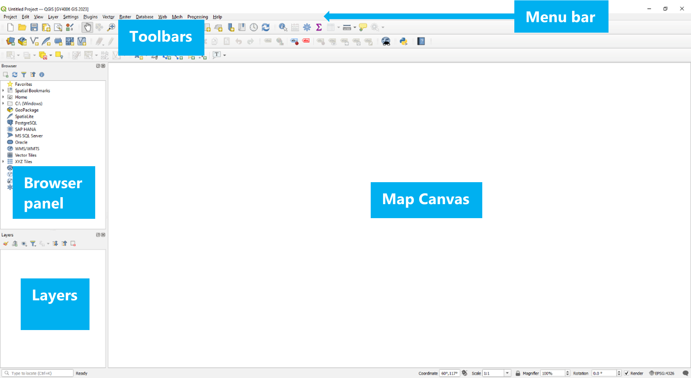

Before you start#
These exercises will involve downloading many different files, and creating even more new files, all containing data for the exercises project.
In previous years, many students have lost days or sometimes weeks of work because they saved everything to the Downloads folder of a University PC, which gets cleaned and erased regularly; or in their home folder on a laptop which broke; or some other similar issues.
You can avoid any risk of this if you use OneDrive - a Microsoft cloud file storage service, which is included with your UL account. You can access your UL OneDrive from any UL PC automatically; and you can install OneDrive on your own laptop or home PC, and sign in to your UL account to give the same access. This creates a folder on the computer called OneDrive - University of Limerick which contains all your files: but rather than being stored on the UL PC or on your own laptop, they’re stored in the cloud, so you can open them on any computer. Edit a file on any computer, and you’ll be able to see the edited version on any other computer with access to your UL OneDrive.
You can also log in to your UL OneDrive through a browser (e.g. Chrome or Edge) to view the files online, and there’s Google Play and Apple Store apps as well, if you want to view your files on a tablet or phone.
Create a GY4006 folder in your UL OneDrive#
You should create a folder called GY4006 in your UL OneDrive. Any files you download or create through the course of the project should be saved to this folder.
If you don’t do this, you run the risk of losing a substantial amount of work - it has happened before, and there’s nothing we can do about it.
QGIS Desktop GIS Software#
Open QGIS. In the Start Menu, you might see multiple different options, including QGIS Desktop and QGIS Desktop with GRASS. GRASS is an add-on that we won’t be using right now, but either will work just fine. If you have installed the latest version, you’re looking for QGIS Desktop 3.36; the UL PCs should have version 3.22.

You want to open a new project: Project > New.

The main part of the QGIS window is the map canvas. To the left you should see the Layers and Browser panels. You should also see the Toolbars below the menu above the map canvas.
The Exercises#
In order to help achieve the objectives above, and answer the research question, you need to map some particular data for your area. Here’s an explanation of the tasks, broken down by what data you’ll use and what you’ll be doing with it, specifing which grades require completion of each particular task. The next section lists the tasks broken down by grade target; the section below that lists the tasks by recommended order of completion.
The data you’ll use#
To look at flooding of rivers in this AOI, you need a map of the rivers; a map of the lakes would also help. [C-grades and above]
Flooding happens when the water level in the rivers rises too high. Water levels in Irish rivers are monitored by the Office of Public Works, the OPW - and you’ll need a map of those water level monitors in order to know where the river water level is being monitored in your area. [C-grades and above]
Mapping flood risk for all of Ireland would be too much - so everyone will be working on different individual areas of interest. You’ll need a map of your individual area of interest (AOI). [C-grades and above]
An area is flooded if the height of the raised water level of the river is higher than the height of the adjacent land surface. So you’ll need a digital elevation model of the land surface to see what areas have elevations lower than a flood water level. [C-grades and above]
To understand if there’s a socioeconomic bias to who might be affected by flooding, you’ll need data about the socioeconomic status of people who live in the areas which might be flooded. That’s available from the Central Statistics Office Census of Population, most recently the 2022 Census. This is available in two separate files: one containing tables of census data, and a second containing the map areas for each row in the tables of data. [C-grades and above]
It can also really help to have a base map of your area, to see what else might be affected there beyond just people living there - i.e., what’s in your flood area in terms of infrastructure, businesses, etc. These days, we’re all pretty familiar with Google Maps, and you should add this to your project as well - or the open source alternative, OpenStreetMap. These can be brought in as tile data from online sources. [C-grades and above]
There’s other data available to help explore what might be vulnerable in your area, such as remote sensing satellite imagery. You can get this in the form of specific visualisations [B-grades and above], or as individual data bands [A-grades].
If you’re trying to analyse flood risk in an area, it might be helpful to look at what flooding has happened in that area before. That data is also available from the OPW - although it needs a bit of work to bring it in and make it usable. [A-grades]
Using the data#
Just getting the data isn’t enough though - you need to get the data into a useful and usable format, and actually make use of it. This is generally referred to as geoprocessing.
For a start, everyone’s individual Areas Of Interest (AOIs) are included in a single map, with the AOIs identified by student ID. You’ll have to extract your own AOI from this file. [C-grades and above]
The data sources you’ll be using all cover much more than just your AOI. Most of the data sources cover the area of the State (the 26 counties), or all of Ireland. It’s completely unnecessary to have all this data - and it’s a waste of computation resources. Each bit of data requires memory for storage and processor power to work with it. So, you should start by clipping your datasets to your AOI. [C-grades and above]. It’s sometimes useful to see what’s happening immediately surrounding your AOI, so you can instead go a step further and create a buffer zone around your AOI, and clip the datasets to this. [B-grades and above]
When using data from multiple sources, it’s important to ensure that you’re working with the right coordinate reference system; and ideally, saving all your data in that coordinate reference system. [C-grades and above]
To make a flood risk map for your AOI, you’ll have to look at the data for one of the water level monitors in your AOI and choose a water level height you’re going to create a flood risk map for - and then do some raster geoprocessing of the digital elevation model to produce a map shape of the area where the height of the land surface is lower than this water level height. This will produce a map of black areas which aren’t flood risk, and white areas which are flood risk - which you can compare to your other map data [C-grades and above]. Of course, you won’t be able to see through this, so it will hide some of the data, but you can extract the shape of the flood risk zones to show them as semi-transparent shapes, allowing you to see the map data under them. [B-grades and above] Again, even better is to do this for more than one water level, to show different levels of risk [A-grades]. It’s worth noting, though, that all of the water levels shown in the OPW data have been reached by the rivers during the period of data collection - so that level of flooding has been seen before. For this reason, what would be most useful of all would be to download the full dataset and use it to work out what even higher water levels the river might reach and how often that might be expected - say the water level that might be reached once every 100 or 500 years - and produce flood risk maps for these water levels [A1 grade].
Understanding who is at risk in your flood risk zone requires using the census data for the people living in your flood risk zone, but you can’t do that while the data is still in the two separate files - the tables of data, and the maps. You’ll need to link these together to use them [C-grades and above]. You can determine socioeconomic variations in your flood risk area by using one of the columns given in these census data tables to see how many people in each part of the flood risk zone(s) gave a particular answer to a relevant question [C-grades and above], but it’s also possible to combine multiple columns to see how many people in each flood risk zone(s) gave one of several answers, or what percentage of the people in each flood risk zone(s) gave particular answers [B-grades and above]. Even better is to do this more than once, for different questions, so you’re not relying on just a single factor [A-grades].
Understanding what is at risk can be done at a simple level by looking at what’s shown in the flood risk area on the base map, which doesn’t require any extra geoprocessing [C-grades and above]. You can understand a bit more by using additional data sources like the satellite data. The satellite you’d use for this doesn’t just take photographs using visible light, but also using a few different invisible ‘colours’ of infrared light - actually a total of 13 different ‘colours’ or bands. To be useful, this needs a little processing to produce a useful visualisation, such as visualising the Normalised Difference Vegetation Index (NDVI). Some visualisations, like the NDVI, are so commonly used that you can actually download this pre-processed, and just bring it straight in to your project [B-grades and above]. However, you’d learn more by instead downloading the data for the individual ‘colours’ or bands, and creating the visualisation yourself [A-grades]. Most useful of all would be to go beyond the individual visualisations, and use the data from all bands to produce your own land use map of your AOI, using a tool called K-means clustering [A1-grade].
The historic data for past floods can be seen in online mapviewers, but you can’t bring that data into your project easily. If you want that data on your maps, you’ll need to take a screenshot of the online mapviewer for your AOI. You can’t add a screenshot to your project directly, because a screenshot doesn’t have coordinate information. However, you can georeference the screenshot to add the missing coordinate information. That can still be a bit awkward, because the screenshot is going to look a bit fuzzy and distorted on your map - and it’s also going to cover up at least some of your other data. But you don’t need everything on the screenshot - most of what you can see on it is just duplicating your base map. You only need the locations and information about the past floods - and you can digitise this to add them to your map in a way that won’t hide the other data you want to see with it. [A-grades]
Visualising the data#
Of course, you’ll be looking at all of this on the map - so you need to adjust how the data is visualised to be able to see everything. You should adjust the vector symbology to display the water level monitors, rivers, lakes, and your AOI appropriately. The digital elevation model is best shown as a hillshade, so you need to adjust its raster symbology. The base map is not useful if it hides the hillshaded digital elevation model, so you should adjust the tile symbology to overlay it on this DEM. The census data should be visualised as a thematic map, to show the variation within your AOI. [C-grades and above]
You can also tweak the symbology even further to distinguish rivers of different sizes. [B-grades and above]
If you’ve created your own visualisation of the satellite data, this should be shown using an appropriate colour ramp; and if you georeferenced the past floods data, this should be shown using appropriate symbols. [A-grades]
Any additional data you’ve brought in or geoprocessed should also have appropriate symbology. [A1-grade]
Producing final maps#
It’s all very well for you to see this on the screen, but if you want more than you to see your results, you need to show the data on a map which could be included in or with a report. That means using the Print Layout tool to create printable maps. You can’t show all of your data at the same time - some of the data will hide other data. That means producing multiple maps, all of which should have at least the standard elements in addition to the map itself: a title to indicate what the map is showing, a north arrow to show orientation, a scale bar to give an indication of sizes and distances, and a legend to explain what is shown on the map.
You should at least produce a map showing the water level monitors, rivers, lakes, and your AOI over the tile basemap overlying the hillshaded DEM; [C-grades and above]
and a map showing the water level monitors, rivers, lakes, and your AOI over your census data thematic map. [C-grades and above]
You should also have either a map showing your water level monitors, rivers, lakes, and AOI over your black and white flood risk map [C-grades and above];
or your vectorised flood risk zones should be shown on all maps. [B-grades and above]. If you have multiple flood risk zones, these should all be shown on all maps [A-grades].
If you created two census thematic maps, these should be shown side by side on the same page, both showing all vector data. These maps can share elements such as the legend. [A-grades]
If you have satellite data, you should have an additional map showing your water level monitors, rivers, lakes, AOI, and flood risk zones over your downloaded satellite data visualisation [B-grades and above], or your water level monitors, rivers, lakes, AOI, flood risk zones and past floods over the custom satellite data visualisation you created [A-grades].
If you georeferenced and digitised the past floods data, this should be shown on all maps, and you should include an additional map showing the georeferenced screenshot over the base map where all four edges of the screenshot can be seen and compared to the base map. [A-grades]
Any other work done should be shown on these or additional maps as appropriate. [A1-grade]
Written report#
The maps will allow you to come up with answers - but unless you want everyone who looks at them to have to repeat your analysis of the maps, you’ll have to do some explaining of what your maps show in an accompanying report. This report should explain where in your area flooding might happen, what is vulnerable in this flood risk area, and whether there’s a socioeconomic bias in who is at risk of flooding there - achieving your objectives, and helping to answer your research question. The report should make reference to all of your maps and data.
List of tasks sorted by grade#
C-grade (40-54%) and above#
Data Import#
Vector Point data - Water level monitors
Vector Line data - Rivers
Vector Polygon data - Lakes
Vector Polygon data - The Areas of Interest (AOIs)
Vector Polygon data - Census Small Areas
Attribute data - Census Small Areas data tables
Raster data - Digital Elevation Model (DEM)
Tile data - OpenStreetMap or Google Maps base map
Data Processing#
CRS - Ensure the project is in the right coordinate reference system, and save data in that coordinate reference system
Vector Geoprocessing - Extract your individual Area of Interest (AOI)
Vector Geoprocessing - Clip other data to your AOI
Attribute Geoprocessing - Join the census polygons to the census data tables
Raster Geoprocessing - Clip the DEM to your AOI
Raster Geoprocessing - Create a flood risk map using the DEM and river water level data
Data Visualisation#
Vector Symbology - adjust the symbology of the rivers to display them in an appropriate colour
Vector Symbology - adjust the symbology of the lakes to display them in an appropriate colour
Vector Symbology - adjust the symbology of the water level monitors to display them using an appropriate symbol
Vector Symbology - adjust the symbology of your AOI to display is appropriately
Raster Symbology - adjust the symbology of the digital elevation model to display it as a hillshade
Tile Symbology - adjust the symbology of the tile base map to display it overlaid on the hillshaded DEM
Attribute Symbology - Create a thematic map from the census data, using graduated or categorised symbology on an attribute
Maps to submit#
A map showing the water level monitors, rivers, lakes, and your AOI over the tile basemap overlaying the hillshaded DEM
A map showing the water level monitors, rivers, lakes, and your AOI over the flood risk map you created
A map showing the water level monitors, rivers, lakes, and your AOI over your census thematic map
All maps must have (1) North arrow, (2) scale bar, (3) title, and (4) legend.
Report to submit#
A report outlining where, what, and who is vulnerable to flooding (using the maps to answer the objectives).
B-grade (55-69%) and above#
Complete all of the C-grade level tasks, plus:
Data Import#
Raster data - Multispectral satellite imagery processed in the Copernicus Browser (e.g. NDVI)
Data Processing#
Vector Geoprocessing - Create a buffer around your area to use in clipping other data
Attribute Geoprocessing - Create a new attribute in the census data from existing attributes using the Field Calculator
Raster Geoprocessing - Vectorise the flood risk areas
Data Visualisation#
Vector Symbology - Adjust the symbology of ALL vector features, including river symbology by size
Attribute Symbology - Your census thematic map should be based on the new attribute you created
Maps to submit#
Vectorised flood risk zones should be shown on all maps - and there is thus no need for the separate map showing the vector features over the black and white flood risk raster
An additional map showing the water level monitors, rivers, lakes, flood risk zones, and your AOI over the satellite data visualisation
All maps must have (1) North arrow, (2) scale bar, (3) title, and (4) legend.
A2-grade (70-79%) and above#
Complete all of the C-grade and B-grade level tasks, plus:
Data Import#
Raster data - Multispectral satellite imagery (MSI) individual L2A bands
Data Processing#
Attribute Geoprocessing - Create a second new attribute in the census data from existing attributes using the Field Calculator
Raster Geoprocessing - Create a visualisation of the satellite data, e.g. NDVI, from individual band data
Raster Geoprocessing - Georeference a map of past floods in your area/buffer
Raster and Vector Geoprocessing - Create and vectorise an additional flood risk map using the DEM and river water level data, for a different water level
Vector Geoprocessing - Digitise the georeferenced map
Data Visualisation#
Vector Symbology - Customise the symbology of the digitised georeferenced features
Raster Symbology - Customise the symbology of your satellite data visualisation to display it using an appropriate colour ramp
Attribute Symbology - Your second census thematic map should be based on the new attribute you created
Maps to submit#
An additional map showing your georeferenced screenshot over your base map, such that all edges of the georeferenced screenshot can be clearly seen and compared to the base map
Past Floods digitised elements should be shown on all maps
An additional map showing the water level monitors, rivers, lakes, flood risk zones, past floods, and your AOI over your satellite data visualisation
Census map should show both thematic maps side by side
All maps must have (1) North arrow, (2) scale bar, (3) title, and (4) legend.
A1-grade (80%+)#
Complete all of the C-grade and B-grade and A2-grade level tasks at an excellent level, plus:
Flood risk maps should be created by exceedance probability
K-means clustering of MSI L2A bands to produce a land use map
Additional self-directed tasks e.g. import and appropriately display vector features for roads etc. from OpenStreetMap or other sources, supervised learning on satellite data for land use, catchment analysis, or other appropriate data or geoprocessing
Maps to submit#
Maps should contain additional elements or extra maps should be submitted such that all your work is shown on the maps.
All maps must have (1) North arrow, (2) scale bar, (3) title, and (4) legend.
Recommended order of tasks#
Data Import: Vector Line and Polygon data - Rivers and Lakes
[C-grades and above]Data Import: Vector Point data - Water level monitors
[C-grades and above]Data Import: Vector Polygon data - AOIs
[C-grades and above]Data Import: Tile data - OpenStreetMap or Google Maps base map
[C-grades and above]Data Processing: CRS - Ensure the project is in the right coordinate reference system, and save data in that coordinate reference system
[C-grades and above]Data Visualisation: Vector Symbology - adjust the symbology of the lakes to display them in an appropriate colour
[C-grades and above]Data Visualisation: Vector Symbology - adjust the symbology of the rivers to display them in an appropriate colour
[C-grades]or colours[B-grades and above]Data Processing: Vector Geoprocessing - Extract your individual Area of Interest (AOI)
[C-grades and above]Data Visualisation: Vector Symbology - adjust the symbology of your AOI to display it appropriately
[C-grades and above]Data Processing: Vector Geoprocessing - Create a buffer around your area to use in clipping other data
[B-grades and above]Data Processing: Vector Geoprocessing - Clip Rivers and Lakes layers to your AOI
[C-grades and above]or AOI buffer[B-grades and above]Data Processing: Vector Geoprocessing - Extract the correct water level monitors and clip them to your AOI
[C-grades and above]or AOI buffer[B-grades and above]Data Visualisation: Vector Symbology - adjust the symbology of the water level monitors to display them using an appropriate symbol
[C-grades and above]Data Import: Raster data - Digital Elevation Model
[C-grades and above]Data Processing: Raster Geoprocessing - Clip the DEM to your AOI
[C-grades and above]Data Visualisation: Raster Symbology - adjust the symbology of the digital elevation model to display it as a hillshade
[C-grades and above]Data Processing: Raster Geoprocessing - Create flood risk map(s) using the DEM and river water level data
[C-grades and above]Data Processing: Raster and Vector Geoprocessing - Vectorise flood risk map(s)
[B-grades and above]Data Processing: Vector Geoprocessing - Save your AOI as a GeoJSON file in the EPSG:4326 coordinate reference system
[B-grades and above]Data Import: Raster data - Explore the multispectral satellite imagery provided by the Copernicus Browser, and download a visualisation of the data, e.g. NDVI
[B-grades]or the individual data bands[A-grades]Data Processing: Raster Geoprocessing - Create a visualisation of the satellite data, e.g. NDVI, from individual band data
[A2-grade]or a custom land use map using K-means clustering[A1-grade]Data Import: Vector Polygon data - Census Small Areas
[C-grades and above]Data Processing: Vector Geoprocessing - Clip the census polygons to your AOI
[C-grades and above]or AOI buffer[B-grades and above]Data Import: Attribute data - Census Small Areas data tables
[C-grades and above]Data Processing: Attribute Geoprocessing - Join the census polygons to the census data tables
[C-grades and above]Data Processing: Attribute Geoprocessing - Use the Field Calculator to create a new attribute in the census data from existing attributes relevant to social class
[B-grades and above]and a second new attribute of your choice[A-grades]Data Visualisation: Attribute Symbology - Create thematic map(s) from the census data, using graduated or categorised symbology on an existing attribute
[C-grades and above]or the attribute(s) you have calculated[B-grades and above]Data Processing: Raster Geoprocessing - Georeference a screenshot map of past floods in your area/buffer
[A-grades]Data Processing: Vector Geoprocessing - Digitise the georeferenced map
[A-grades]Additional self-directed task(s)
[A1-grade]Use the Print Layout tool to create your first map layout
[C-grades and above]Use the Print Layout tool to create additional single-map layouts
[C-grades and above]Use the Print Layout tool to create a map showing both of your census thematic maps on the same page
[A-grades]